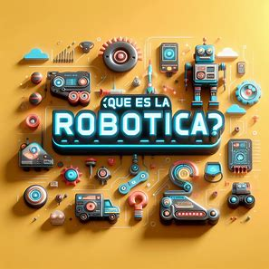
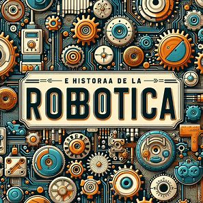

La Robótica

La robótica es una disciplina que se ocupa del diseño, operación, manufacturación, estudio y aplicación de autómatas o robots. Para ello, combina la ingeniería mecánica, ingeniería eléctrica, ingeniería electrónica, ingeniería biomédica y las ciencias de la computación, así como otras disciplinas.
La robótica representa la cumbre en la trayectoria de desarrollo tecnológico, es decir, del diseño de herramientas. Su cometido es construir una herramienta que pueda desempeñar muchas de las labores que actualmente desempeña el ser humano, de manera más eficiente y rápida, o en condiciones y ambientes que al ser humano le serían inaccesibles.
El robot es, de algún modo, la herramienta más inteligente posible. Sin embargo, el desarrollo de este tipo de herramientas, ya desde los años de los inicios de la automatización, también se traduce en desempleo y en la sustitución de mano de obra humana por autómatas.
Esto alimenta también un miedo ancestral a perder el control sobre este tipo de herramientas, o a ser reemplazado, dominado o violentado por ellas, advertencias que figuran incluso en textos tan antiguos como el Golem de la tradición hebrea, o el monstruo de Frankenstein creado por la novelista inglesa Mary Shelley.

La palabra robot proviene del vocablo checo robota, que significa literalmente “esclavo”. Fue puesto en circulación por el escritor checo Karel Capek (1890-1938) con su novela R.U.R. (Robots Universales Rossum) de 1920.
Igualmente, la palabra robótica, entendida como disciplina, fue acuñada por Isaac Asimov (1920-1992). Este escritor de Ciencia Ficción fue uno de los más célebres cultores del futuro imaginario robotizado.
Sin embargo, los antecedentes de la robótica pueden rastrearse mucho antes, en el deseo del ser humano de construir seres a su imagen y semejanza, que pudieran relevarlo de los trabajos tediosos.
Ya en el siglo III a. C. el escritor chino Lie Yukou escribió el Lie Zi, relato donde a un rey chino le era presentada una figura humana mecánica. En los textos Pneumática y Automata de Herón de Alejandría, en el siglo I a. C., ya aparecían las ideas de máquinas y autómatas capaces de hacer lo que el ser humano no.
Los primeros robots reales aparecieron entre 1950 y 1960. Se dedicaban a labores industriales simples, mecánicas y automatizadas. En 1971 se utilizó el primer robot dedicado a la exploración espacial. Fue puesto en la superficie marciana por el proyecto espacial de la extinta Unión Soviética, Se perdió contacto con él tan sólo unos segundos después del aterrizaje.
Los estadounidenses imitaron este gesto en 1976 con el Viking I de NASA, demostrando así el enorme potencial de los robots en la exploración espacial y en otros ambientes extremos, como el fondo marino. Incluso se intentó emplear robots en la remoción de los escombros del reactor destruido en Chernóbil, en 1986, pero la radiación freía los circuitos a los pocos segundos de uso.
El primer robot humanoide y bípedo, el ASIMO, fue anunciado en Japón en 2011, y se hicieron demostraciones de su capacidad de interacción con humanos.
Los adelantos en inteligencia artificial permitieron que en 2015 apareciera también Sophia, un robot ginoide con apariencia humana realista, diseñado para adaptarse al entorno social con humanos y ser capaz de recordar, reconocer caras y simular expresiones faciales.